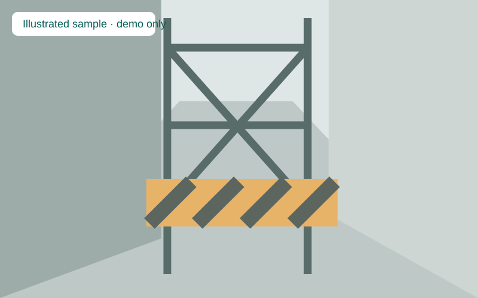

1. Photo
auto_awesome
2. AI Scan
task_alt
3. Submitted
add_a_photo
Report a Route Barrier
check
No photo selected
Ready

my_location
Example location
Location not confirmed
Select your observed location
